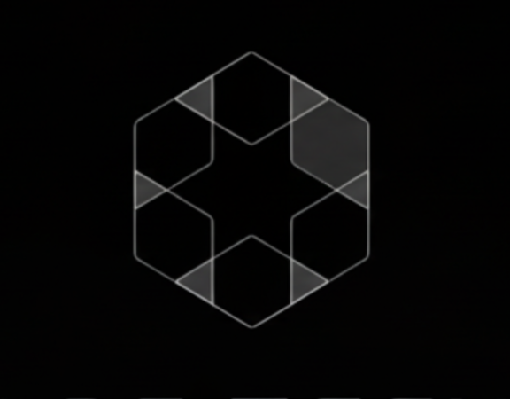

← AOS SAT / REPARACIÓN DE ORDENADORES
Reparación de ordenadores.
Portátil, torre o Mac. Cuéntanos qué le pasa y te preparamos un presupuesto personalizado: cada equipo y cada avería es distinta.

AOS BlackWebTECHNOLOGY · SERVICE · MARKET CONTACTO ↗Portátil, torre o Mac. Cuéntanos qué le pasa y te preparamos un presupuesto personalizado: cada equipo y cada avería es distinta.